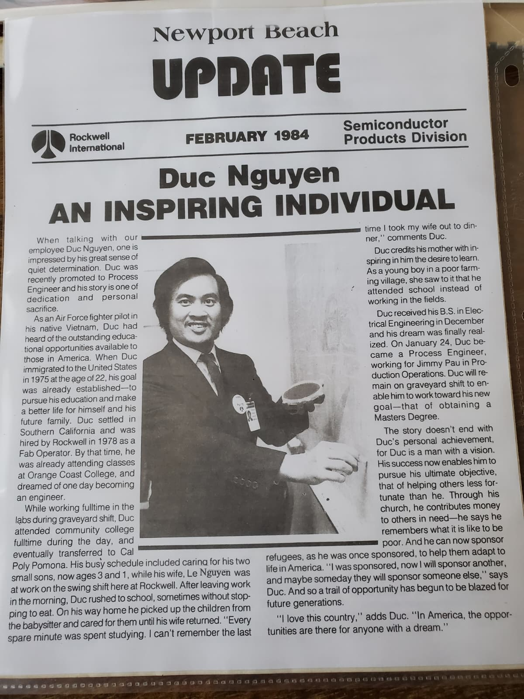

Vision & Mission
From the last refugee flight to a noble mission of gratitude.
The Founder's Journey

Doug Huu Nguyen
Mr. Doug Huu Nguyen is a native of Ben Tre, born in My Tho, and attended Nguyen Dinh Chieu High School. After graduating, he joined the active-duty Air Force, serving in the 2nd Air Division as a flight crew member on observation aircraft.
On the afternoon of April 29, 1975, on the last flight out of Tan Son Nhat, he landed at Utapao airbase (Thailand), followed the US Air Force to Guam, and finally arrived at Camp Pendleton refugee camp (Oceanside, California) in May 1975.
At the Camp Pendleton refugee camp, in a state of deprivation, every refugee, regardless of age, was issued a military jacket. The jackets fit the adults, but for the little children, the oversized jackets made them look like "walking jackets." One day, a US delegation including President Gerald Ford and First Lady Betty Ford visited the refugees at the camp. Seeing many children dressed so shabbily, the President and First Lady burst into tears. They wiped their tears and said: "Our America is a superpower, yet we let the refugees dress like this?" Immediately, they ordered the camp director to issue civilian jackets for everyone the very next day. This remains a deeply cherished memory reflecting profound gratitude towards President Ford and his wife.
Sponsored by an American family and leaving the camp with empty hands, he started working at MU Electronic, then moved to work night shifts at Rockwell International. During the day, he attended Orange Coast Community College, then transferred to California Polytechnic Pomona and excellently earned a Double Degree in Electrical & Computer Engineering (ECE).
He became the first Vietnamese refugee engineer at Rockwell International, honored in the company's newspaper. Overcoming all hardships, he went on to earn a Master's degree and was promoted to Chief Engineer in Anaheim, responsible for 100 intercontinental MX Missiles (each carrying 10 nuclear warheads), contributing to the national security of the United States.
Social Work & Community Service
In 1993, when Mr. Nguyen Van Cat, the Deputy District Chief of Giong Trom (Ben Tre province), founded the Ben Tre - Kien Hoa Mutual Aid Association, Mr. Doug Nguyen was elected as the Vice President of Internal Affairs. Subsequently, he served as the General Secretary for 11 mutual aid associations representing the Mekong Delta provinces (Long An, My Tho, Go Cong, Tra Vinh, Vinh Long, Can Tho, Soc Trang, Bac Lieu, Ca Mau, Chau Doc). He frequently organized Lunar New Year events and summer camps, and collaborated with the Association Presidents to publish 6 special magazines on the customs and traditional cuisine of Southern Vietnam.
Mr. Doug was also one of the co-founders of the Lang Ong Ba Chieu Le Van Duyet Association in Westminster, California, alongside other intellectuals (ARVN Deputy Minister of Education Nguyen Thanh Liem, Administrator Le Minh Duc, Administrator Chau Van De...).
In the business sector, he was the first to open a restaurant in Little Saigon, named "Little Saigon Restaurants" in Garden Grove. In 1994, he and Mr. Tran Vu, owner of Little Saigon Supermarket, invited Garden Grove Mayor Broadwater to organize the first Thanksgiving event to thank the United States and allied nations for sheltering the refugees. Through his restaurant, Mr. Doug enthusiastically sponsored 6 ARVN Air Force divisions during their year-end gatherings.
The Promised Land in Pauma Valley


Currently retired, Mr. Doug owns a 7.6-acre farm on a 600-foot-high hill in Pauma Valley. This place has a completely self-sufficient infrastructure with a solar power system, private water well, generator, and numerous fruit trees and vegetables.
With a great vow, he decided to donate this entire precious land to build the Global Faith Temple, a sanctuary to converge and worship three figures: Buddha, Jesus Christ, and Allah. Concurrently, the project includes erecting a giant marble wall honoring the Fallen Heroes.
The Sacred Dreams
This mission stems not only from a heart of gratitude but was also guided by deeply spiritual omens through 4 dreams:
1. Thanksgiving Night
He dreamt of an American couple plowing the land on his property to "find the way to heaven." Later, an old man led him up soaring stairs, opening up to the vast sky over San Diego. There, he met American citizens who recognized his identity and respectfully presented him with a pair of giant arowana fish.
2. Help from the Community
Two weeks later, he saw a group of young white Americans pulling weeds and fixing fences. When asked, they happily replied that they were "cleaning up this land to help you."
3. The Native American Blessing & Religious Convergence
In another dream, he met Native Americans. A 17-year-old girl gave him 3 priceless gifts: The Heart of Mother Mary, the Heart of Avalokiteshvara Bodhisattva, and the Heart of Prophet Mohammad Allah. She affirmed that this land belongs to the Native Americans and sent him wishes of luck and happiness.
4. The Historic Reunion
The climax was a dream of reuniting with President Nguyen Van Thieu and his wife. Madame Nguyen Thi Mai Anh called Doug: "Mother has found you," and she called President Nguyen Van Thieu over to meet her son. She then pointed to the soldiers following the President and said: "These are your brothers." Present at the banquet were General Cao Van Vien, General Ngo Quang Truong, US General Westmoreland, along with a sea of flags from the ARVN, USA, and 6 allied nations. President Thieu personally entrusted him with the heavy responsibility of "hosting the guests" and "erecting the memorial monument."
Real-Life Spiritual Signs
After those omens, Mr. Doug immediately established the Global Faith Temple (Father Sky, Mother Earth). Miraculously, the very next morning (7:00 AM) when bringing out water for offering, a snake appeared and coiled itself on the altar. Despite pouring water and praying, the snake remained motionless, protecting the temple for a whole week. He realized this is the Year of the Snake, a spiritual sign confirming the divine witness to his vow.
"Dust returns to dust. The legacy lives forever."
When arriving in the US, Doug had only empty hands; when passing away, he will also leave with empty hands. The legacy left behind is eternal gratitude and tribute to the fallen heroes.